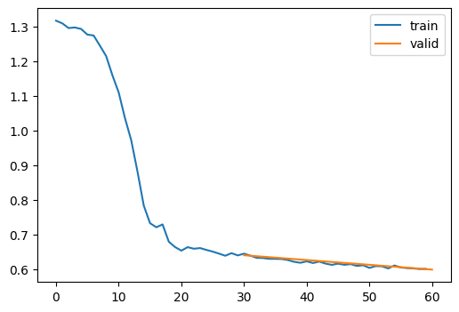

dls = DataLoaders.from_hf("fashion_mnist")Learner
Building a framework for the deep learning workflow
Adapted from:
- https://youtu.be/0Hi2r4CaHvk?si=GA9KaGAnGOlS_NJO&t=3568
- https://github.com/fastai/course22p2/blob/master/nbs/09_learner.ipynb
At this point, Jeremy points out that copying and pasting code leads to bottlenecks in modeling velocity. We need to start to build a framework to:
- rapidly try things
- figure out where things are broken
- load data quickly
- transparently assign CUDA devices
Data
We’ll start with a wrapper around datasets to make it simpler to work with raw PyTorch.
DataLoaders
DataLoaders (splits, nworkers:int=0, bs=32, collate_fn=<function default_collate>, tdir=<TemporaryDirectory '/tmp/tmpdpbo3_u2'>)
Initialize self. See help(type(self)) for accurate signature.
We should also add some helpers to facilitate processing images.
tensorize_images
tensorize_images (dls, feature='image', normalize=True)
Tensorize and normalize the image feature
batchify
batchify (f)
dls = tensorize_images(dls)
xb = dls.peek()["image"]
show_images(xb[:8, ...], figsize=(8, 4))
Notice that this unit-normalized
plt.hist(xb.view(-1))(array([13418., 632., 662., 1059., 1012., 1076., 1408., 2054.,
2393., 1374.]),
array([-0.82495719, -0.54097831, -0.25699943, 0.02697943, 0.3109583 ,
0.59493721, 0.87891603, 1.16289496, 1.44687378, 1.73085272,
2.01483154]),
<BarContainer object of 10 artists>)
Learner and callbacks
Next, we’ll add a learner with callbacks. Recall, this was our earlier fit function:
fit??Signature: fit(epochs, model, loss_func, opt, train_dl, valid_dl, tqdm_=False) Docstring: <no docstring> Source: def fit(epochs, model, loss_func, opt, train_dl, valid_dl, tqdm_=False): progress = tqdm if tqdm_ else lambda x: x for epoch in range(epochs): model.train() for batch in progress(train_dl): xb, yb = map(to_device, batch) loss = loss_func(model(xb), yb) loss.backward() opt.step() opt.zero_grad() model.eval() with torch.no_grad(): tot_loss, tot_acc, count = 0.0, 0.0, 0 for batch in progress(valid_dl): xb, yb = map(to_device, batch) pred = model(xb) n = len(xb) count += n tot_loss += loss_func(pred, yb).item() * n tot_acc += accuracy(pred, yb).item() * n print( f"{epoch=}, validation loss={tot_loss / count:.3f}, validation accuracy={tot_acc / count:.2f}" ) return tot_loss / count, tot_acc / count File: ~/Desktop/SlowAI/nbs/slowai/convs.py Type: function
To add callbacks, we need a few clever Exception control flow signals
CancelEpochException
Common base class for all non-exit exceptions.
CancelBatchException
Common base class for all non-exit exceptions.
CancelFitException
Common base class for all non-exit exceptions.
Then, we define the learner and callback classes
Callback
Callback ()
Initialize self. See help(type(self)) for accurate signature.
with_cbs
with_cbs (nm)
Initialize self. See help(type(self)) for accurate signature.
Learner
Learner (model, dls, loss_func=<function mse_loss>, lr=0.1, cbs=None, opt_func=<class 'torch.optim.sgd.SGD'>)
Initialize self. See help(type(self)) for accurate signature.
This learner delegates all aspects of model training to callbacks, so something like this is neccesary.
TrainCB
TrainCB ()
Initialize self. See help(type(self)) for accurate signature.
Now that we have the basic scaffolding, we’ll add metrics. Updating and storing state will be handled by torchmetrics, but we’ll define a callback to orchestrate the torchmetrics instances.
MetricsCB
MetricsCB (*ms, **metrics)
Initialize self. See help(type(self)) for accurate signature.
Finally, we can define a Trainer callback specifically for the autoencoder objective.
class TrainAutoencoderCB(TrainCB):
def predict(self, learn):
xb, *_ = learn.batch
learn.preds = learn.model(xb)
def get_loss(self, learn):
xb, *_ = learn.batch
learn.loss = learn.loss_func(learn.preds, xb)Let’s also define some additional useful callbacks:
ProgressCB
ProgressCB (plot=False)
Initialize self. See help(type(self)) for accurate signature.
after
after (callback_cls:Type[__main__.Callback])
DeviceCB
DeviceCB (device='cuda')
Initialize self. See help(type(self)) for accurate signature.
Putting it all together
fashion_mnist
fashion_mnist ()
model = get_ae_model()
dls = fashion_mnist()
cbs = [
MetricsCB(),
DeviceCB(),
TrainAutoencoderCB(),
ProgressCB(plot=True),
]
learn = Learner(
model,
dls,
F.mse_loss,
lr=0.01,
cbs=cbs,
opt_func=torch.optim.AdamW,
).fit(2)| loss | epoch | train |
|---|---|---|
| 0.971 | 0 | train |
| 0.770 | 0 | eval |
| 0.742 | 1 | train |
| 0.717 | 1 | eval |

CPU times: user 24 s, sys: 1.39 s, total: 25.4 s
Wall time: 27.7 sdef viz(model, xb):
xb = xb.to(def_device)
pred = model(xb)
paired = []
for i in range(min(xb.shape[0], 8)):
paired.append(xb[i, ...])
paired.append(pred[i, ...])
show_images(paired, figsize=(8, 8))xbt, _ = dls.peek("test")
viz(model, xbt)
Still not good, but less code!
I don’t really like the idea of delegating the core training functions to callbacks, so we can just implement them here:
TrainLearner
TrainLearner (model, dls, loss_func=<function mse_loss>, lr=0.1, cbs=None, opt_func=<class 'torch.optim.sgd.SGD'>)
Initialize self. See help(type(self)) for accurate signature.
This works pretty similarly
class AutoencoderTrainer(TrainLearner):
def predict(self):
xb, *_ = self.batch
self.preds = self.model(xb)
def get_loss(self):
xb, *_ = self.batch
self.loss = self.loss_func(self.preds, xb)
cbs = [MetricsCB(), DeviceCB(), ProgressCB(plot=True)]
learn = AutoencoderTrainer(
get_ae_model(),
dls,
F.mse_loss,
lr=0.01,
cbs=cbs,
opt_func=torch.optim.AdamW,
).fit(2)| loss | epoch | train |
|---|---|---|
| 0.965 | 0 | train |
| 0.769 | 0 | eval |
| 0.749 | 1 | train |
| 0.721 | 1 | eval |

CPU times: user 22.1 s, sys: 98.1 ms, total: 22.2 s
Wall time: 22.2 sCan we improve the reconstruction? Let’s implement a simple momentum.
class MomentumCB(Callback):
def __init__(self, momentum=0.85):
self.momentum = momentum
def zero_grad(self, learn):
with torch.no_grad():
for p in learn.model.parameters():
p.grad *= self.momentum
cbs = [MetricsCB(), DeviceCB(), ProgressCB(plot=True), MomentumCB()]
learn = AutoencoderTrainer(
get_ae_model(),
dls,
F.mse_loss,
lr=0.01,
cbs=cbs,
opt_func=torch.optim.AdamW,
).fit(2)
viz(model, xbt)| loss | epoch | train |
|---|---|---|
| 0.875 | 0 | train |
| 0.718 | 0 | eval |
| 0.706 | 1 | train |
| 0.689 | 1 | eval |

CPU times: user 22 s, sys: 104 ms, total: 22.1 s
Wall time: 22.2 s
Not especially impressive.
What about using the automated learning rate finder?
to_cpu
to_cpu (x)
LRFinderCB
LRFinderCB (gamma=1.3, max_mult=3)
Initialize self. See help(type(self)) for accurate signature.
show_doc
show_doc (sym, renderer=None, name:str|None=None, title_level:int=3)
Show signature and docstring for sym
| Type | Default | Details | |
|---|---|---|---|
| sym | Symbol to document | ||
| renderer | NoneType | None | Optional renderer (defaults to markdown) |
| name | str | None | None | Optionally override displayed name of sym |
| title_level | int | 3 | Heading level to use for symbol name |
learn = AutoencoderTrainer(
get_ae_model(),
dls,
F.mse_loss,
lr=1e-5,
cbs=cbs,
opt_func=torch.optim.AdamW,
).lr_find()
20.00% [2/10 00:17<01:09]
| loss | epoch | train |
|---|---|---|
| 1.249 | 0 | train |
| 1.026 | 1 | train |
60.00% [18/30 00:05<00:03 1.035]
/home/jeremy/micromamba/envs/slowai/lib/python3.11/site-packages/torchmetrics/utilities/prints.py:43: UserWarning: Encountered `nan` values in tensor. Will be removed.
warnings.warn(*args, **kwargs) # noqa: B028
It looks like 1e-2 is a good learning rate.
cbs = [MetricsCB(), DeviceCB(), ProgressCB(plot=True), MomentumCB()]
learn = AutoencoderTrainer(
get_ae_model(),
dls,
F.mse_loss,
lr=1e-2,
cbs=cbs,
opt_func=torch.optim.AdamW,
).fit(2)
viz(model, xbt)| loss | epoch | train |
|---|---|---|
| 0.985 | 0 | train |
| 0.731 | 0 | eval |
| 0.631 | 1 | train |
| 0.593 | 1 | eval |


Again, not especially impressive.
We’ll write some tool to diagnose model issues in the next notebook.